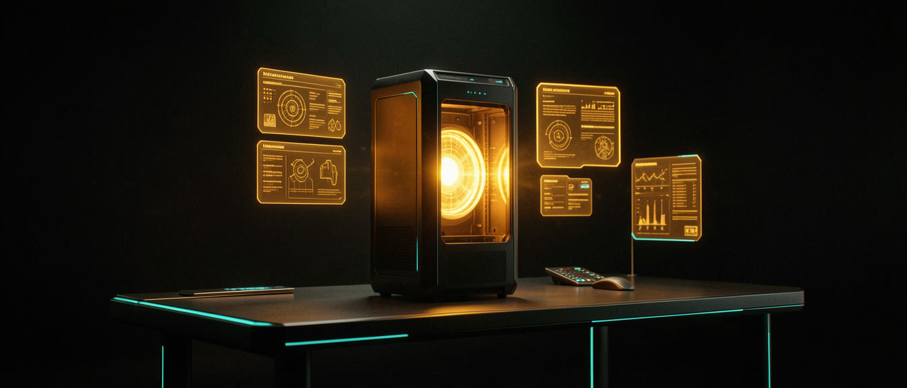
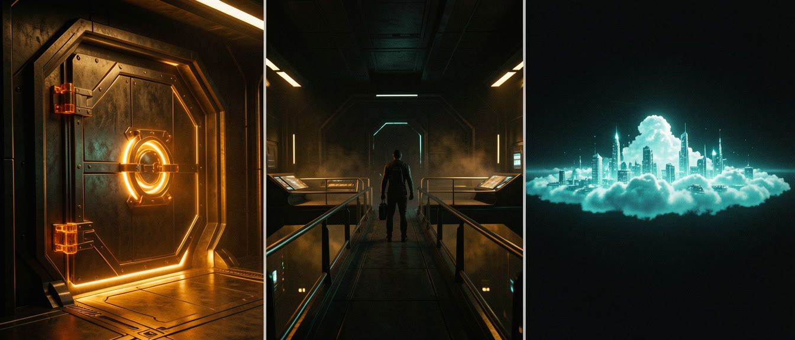
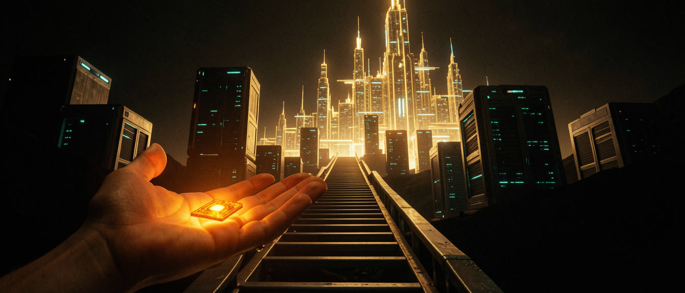
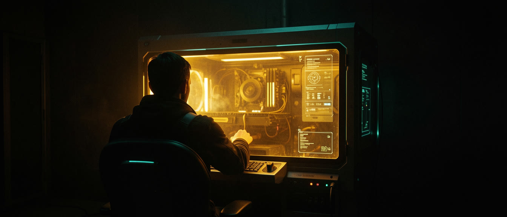

O Laboratório Local.
Grátis. Privado. Seu.
Qual modo rodar, o que sua máquina realmente aguenta, os modelos que valem o disco — e as duas armadilhas que fazem as pessoas acharem que local é ruim.

Escolha seu modo primeiro.
Local não é tudo ou nada. Decida o quanto sai da sua máquina — a escolha do modelo vem depois.

Cofre
100% local, funciona offline. Dados de cliente, contratos, saúde, trabalho ainda não lançado.
trabalho sensívelConectado
O local cuida dos rascunhos e do trabalho pesado; você troca pra nuvem nas decisões mais difíceis.
★ a estratégia do dia a diaNuvem-primeiro
Nuvem por padrão; cai pro local só quando algo não pode sair da máquina.
pouca vramO que sua máquina realmente aguenta?
Arraste até a memória da sua máquina — em Mac com Apple Silicon, memória unificada conta como VRAM. Em PC, use a VRAM da sua GPU.
Três trabalhos. Três campeões.
Não colecione modelos — designe-os. Clique num comando pra copiar.

Qualidade de classe 32B na velocidade de um modelo pequeno. O rei do código local.
ollama pull qwen3-coder:30b-a3b
Cadeia de raciocínio de fronteira, destilada. Veja ele pensar antes de responder.
ollama pull deepseek-r1:14bOs pesos abertos da OpenAI. Bate-papo, ferramentas e agentes, no estilo da casa.
ollama pull gpt-oss:20bSeis casas. Todo tamanho.
Toda casa lança uma escada de tamanhos — o mesmo cérebro, escalado pra cima ou pra baixo. O Ollama é a porta de entrada pra todas elas. Os pontos que cabem na sua máquina ficam acesos (sincronizado com o slider acima) — clique em qualquer ponto pra copiar o comando de pull.
Qwen3pragmático · adora ferramentasDeepSeek-R1pensa em voz alta Llamao padrão · meio-termo
Llamao padrão · meio-termo Mistralenxuto · relaxado
Mistralenxuto · relaxadoAlinhamento também é especificação técnica. Gemma e GPT-OSS vêm travados de fábrica — recusam qualquer coisa mais picante, o que é exatamente o que você quer pra uso seguro em família ou de frente pro cliente. Llama fica no meio-termo; Mistral é mais solto. E existem também modelos totalmente neutros, que você mesmo direciona — essa é a especialidade da Nous Research, com modelos abertos e steeráveis feitos sob medida pra esse tipo de controle. Escolha o temperamento certo pro trabalho certo.
 ollama.com
ollama.com LM Studio (interface gráfica)
LM Studio (interface gráfica)Local é bom, de verdade?
Resposta honesta: um bom 30B local hoje faz o que a fronteira fazia não faz muito tempo — e pra rascunho, trabalho braçal e documento privado, isso já é a maior parte dos seus tokens.

O cérebro de bolso
Bate-papo, rascunhos, resumos — rápido, leve, roda em quase qualquer coisa.
A fronteira de ontem
Código de verdade, agentes de verdade, contexto de verdade — na sua própria mesa, de graça.
Abertos, mas enormes
GLM, DeepSeek, Kimi — fronteira de peso aberto. Grandes demais pra hospedar em casa; centavos pra alugar.


Os 5% mais difíceis
Raciocínio profundo, arquitetura, bom gosto de design. Manda pra cá — e depois volta pra casa.

Em raciocínio puro, a fronteira ainda ganha — é por isso que o modo Conectado existe. Mas a vantagem do local não é QI: é custo zero por token, zero saída de dados e nenhum limite de taxa. Direcione por tarefa, não por lealdade.
Por que acham que local é ruim.
Geralmente não é o modelo. É uma dessas duas configurações.
O padrão de 4.096 tokens
O contexto real do Qwen3-Coder é de 256K. O Ollama entrega ele travado em 4K — você está usando ~1,6% do cérebro e depois culpando o modelo.
OLLAMA_CONTEXT_LENGTH=65536 ollama serveA parede do KV-cache
Contexto consome memória: um 70B precisa de ~42GB só de cache a 128K. Máquinas de consumidor batem o teto por volta de 32–64K utilizáveis — é o cache que não cabe, não o modelo.
q8_0 reduz o cache de memória praticamente pela metade, com perda mínima de qualidade.Três comandos para uma sala lacrada.
O Ollama expõe um endpoint compatível com OpenAI em localhost:11434 — seu agente pluga como qualquer outro cérebro. Nada sai da máquina.
# 1 · puxe o coder $ ollama pull qwen3-coder:30b-a3b # 2 · suba o contexto ANTES de julgar $ OLLAMA_CONTEXT_LENGTH=65536 ollama serve # 3 · aponte seu cliente pra localhost $ <seu-cliente-openai-compatible> --model qwen3-coder:30b-a3b --base-url http://localhost:11434/v1

Hoje à noite: arraste o slider até sua máquina, puxe os modelos recomendados, e suba o contexto antes de julgar qualquer coisa. Seu laboratório é grátis, privado e está sempre aberto.